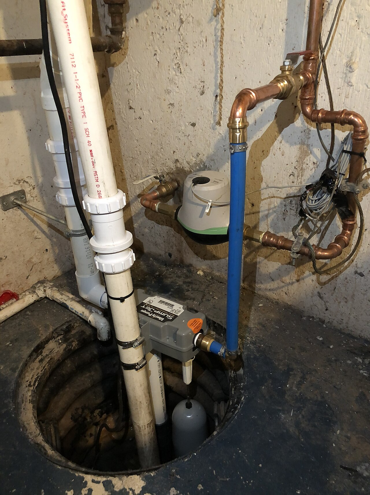

Basement Waterproofing & Drainage in Des Moines, IA
Basement waterproofing is the work of stopping water getting into your basement, or collecting and removing it before it can flood the floor, and it is the right service when your problem is water rather than a foundation that is moving. A basement drainage system, built around an interior channel and a sump pump, is the most common version in existing homes, because it can be fitted without digging up your yard.
In Des Moines, the details are local: homes here sit on Clarion soil over glacial clay soils and freeze-thaw cycles, and 70.2% of the housing stock predates 1980. This page combines the full basement waterproofing & drainage guide with Des Moines's measured soil, rainfall and housing data, so you can judge any quote against both.
Request a free inspection
Des Moines by the numbers: soil, rainfall and housing age
Generic foundation advice ignores the three things that decide how foundations actually behave here: the soil series under the house, the local rain and frost pattern, and how old the housing stock is. These are Des Moines's measured numbers, from public data — not estimates:
| Dominant soil series | Clarion (Clarion-Urban land complex, 2 to 5 percent slopes) |
| Clay in the topsoil | 21% |
| Shrink–swell (LEP) | 1.3% — low |
| Seasonal water table | About 4 feet down in the wettest season |
| Average rainfall | 37.6 inches a year |
| Days below freezing | about 119 a year |
| Homes built before 1980 | 70.2% of housing |
| Homes built before 1960 | 48.4% of housing |
| Population | 214,133 |
| Elevation | about 810 feet |
The ground under most Des Moines homes is Clarion soil. Its topsoil runs 21% clay, and its most active layer has a linear extensibility of 1.3% — a low shrink–swell rating on the USDA scale. Movement here is driven less by swelling clay than by moisture change, frost and settlement — which is why drainage and consistent soil moisture matter so much. The seasonal high water table sits about 4 feet down in the wettest season, so basements and crawl spaces also fight groundwater, not just surface rain.
Housing age stacks the risk. 70.2% of Des Moines's homes were built before 1980 and 48.4% before 1960 — footings poured to older standards, with decades of soil cycles behind them. The city averages 37.6 inches of rain a year, peaking in May, and about 119 days below freezing — the wet–dry and freeze–thaw swings that test those older footings hardest.
Data: USDA Soil Survey (SSURGO) via Soil Data Access, sampled at a residential point in Des Moines; Open-Meteo archive (ERA5) 2015–2024; US Census Bureau ACS 2023 5-year via Census Reporter; USGS Earthquake Catalog; population via Wikidata. Retrieved November 2026.
Watch: Des Moines's rainfall, soil and housing-age data in 11 seconds — animated from the same sources listed above.
What basement waterproofing actually does
Under Des Moines, the sampled soil is Clarion — 21% topsoil clay with a low shrink–swell rating (LEP 1.3%). Start with what the water is doing, because the word waterproofing covers three different jobs. True waterproofing means a barrier on the outside of the wall, a membrane or coating applied to the exterior face, that prevents water from entering the concrete at all. Damp-proofing is a lighter coating, standard on new builds, that resists soil moisture but was never designed to hold back standing water under pressure. Interior drainage is the third job: it accepts that groundwater will reach the wall, collects it in a channel at the floor joint, and pumps it out. It manages water rather than blocking it, and on this page we say so plainly.
Why does water get in at all? The usual driver is hydrostatic pressure. After rain or snowmelt, saturated soil holds water against your foundation, and that water pushes through the weakest openings: the joint where the wall meets the floor, cracks, and the pores of the concrete itself. This is why a basement can leak in a house whose walls look sound, and why painting on another coat of interior sealer so often disappoints. You are not fighting damp; you are fighting pressure, and pressure is handled by relieving it or by a real exterior barrier.
Learn to read where the water enters, because the entry point names the problem. Water at the joint where the wall meets the floor, in several places at once, means groundwater pressure from below and around the footing. Water through a single crack means that crack is the path, and injection may be all you need. Water high on the wall, under a window or near a pipe, usually points to a surface problem outside: grading, a window well, a leaking pipe. Each pattern has a different fix at a different price, and a good inspection starts by matching yours.
What is the difference between waterproofing and damp-proofing?
Waterproofing is a barrier system designed to keep water out of the wall under pressure, usually a membrane or coating on the exterior face, rated for hydrostatic conditions. Damp-proofing is a thin asphalt-based coating that only resists soil dampness and is not rated to stop pressurised water. Most homes were damp-proofed when built, not waterproofed, which is why they can still leak decades later.
Is a wet basement a waterproofing problem or a foundation problem?
It can be either, and the pattern tells you which. Water arriving through one crack after rain is usually a waterproofing problem. Water paired with cracks that are widening, a wall bowing inward, or floors sloping is structural movement with water as a symptom. Fix the water only and the movement continues. When in doubt, get the structure measured before buying drainage.
Interior vs exterior basement waterproofing compared
70.2% of Des Moines homes were built before 1980, so most basement waterproofing & drainage work here happens on older footings. Exterior waterproofing is the thorough answer: dig down outside the wall, clean it, apply a membrane, fit exterior drainage pipe at the footing, and backfill. It stops water before it touches the concrete and protects the wall itself from decades of saturation. It is also disruptive and expensive, because the digging is the job: porches, decks, driveways, landscaping and air-conditioning units may all stand in the way, and published guides put typical exterior excavation waterproofing at $8,000-$15,000 for a house.
Interior waterproofing leaves the wall where it is and handles the water at the floor line. A channel is cut around the inside perimeter at the footing, collecting water from the wall and under the floor and directing it to a sump pump. Published ranges put an interior drainage system with a sump at $2,000-$6,000 for most homes, reaching around $7,000 for large basements. It can usually be installed in one to three days without touching your yard. The comparison table below sets the two side by side.
Many real quotes are hybrids, and that is fine. A common pattern is interior drainage around the full perimeter plus injection of the one or two cracks that actually leak, quoted as separate lines. Another is exterior work on one wall only, usually the wall that is being excavated anyway for a repair, with interior drainage handling the rest. Judge each quote by whether every line maps to a water path you were shown. A line you cannot connect to a leak you have seen is a line to question.
| Interior drainage system | Exterior waterproofing | |
|---|---|---|
| How it works | Channel at the inside floor joint collects water and sends it to a sump pump | Excavation outside, membrane on the wall, drainage pipe at the footing |
| Stops water entering the wall | No: manages water after it reaches the wall | Yes: barrier sits on the wall itself |
| Typical published cost | $2,000-$6,000; up to about $7,000 for large basements | $8,000-$15,000 typical in published guides |
| Disruption | 1-3 days inside; floor edge broken and repoured | 3-5 days; landscaping, porches and drives may be disturbed |
| Best suited to | Groundwater at the floor joint, most leaking basements | Walls needing exterior repair, or when digging is happening anyway |
| Wear parts | Sump pump, replaced about every 7-10 years | Membrane life depends on product; drainage pipe can clog with silt |
Is it better to waterproof a basement from the inside or outside?
Exterior waterproofing is better in principle because it stops water before it reaches the wall, and it is the only approach that protects the concrete itself. Interior systems are better in practice for most existing homes: far cheaper, a fraction of the disruption, and effective at keeping the basement dry. Exterior wins when you are already excavating for another reason, or the wall needs outside repair anyway.
Is interior waterproofing just a bandaid?
Des Moines averages 37.6 inches of rain a year — moisture management is part of any lasting fix. This question comes up constantly in homeowner forums, often from someone staring at a leaking wall and two very different quotes. The honest answer: interior waterproofing does not stop water from entering your wall. It intercepts the water at the floor line and pumps it away, so the basement stays dry while the wall still gets wet. If by fixing the problem you mean a dry basement, it fixes it, and it is the method most waterproofing companies install most of the time. If you mean the wall itself never takes on water again, only exterior work does that.
Calling it a bandaid goes too far, and here is why. A bandaid implies a temporary cover over an untreated cause. An interior system treats the actual cause at play in most leaking basements, groundwater pressure at the footing, by giving that water an easier path than your floor. What it does not treat is a structural cause. If your wall leaks because it is cracked by soil pressure and still moving, drainage alone manages the symptom while the wall keeps travelling. That is the case where the bandaid criticism lands, and it is about diagnosis, not the system.
There is also a cheap test before you commit to either system: the hose test. Run a hose outside the suspect wall for 20 to 30 minutes, away from windows and the top of the wall, and watch inside. Water appearing at the floor joint confirms groundwater pressure. Water appearing mid-wall, at the crack you suspected, confirms a path problem. No water at all suggests the leak needs a longer soak or comes from somewhere else entirely.
Does interior waterproofing fix the actual problem or just manage it?
It manages it, and that distinction is real. Interior drainage does not stop water entering the wall; it collects the water at the floor joint and pumps it out, keeping the basement dry. For groundwater pressure, which causes most leaks, managing is a legitimate and durable fix. For a wall that is moving or deteriorating, management is not enough and the structure needs attention first.
Should I choose interior waterproofing or carbon fiber straps for a leaking wall?
They solve different problems, so the honest answer is that a badly leaking, bowing wall may need both. Straps reinforce the wall against soil pressure and stop it bowing further; they do not stop water. Interior drainage stops the water and does nothing for the wall's strength. Anyone presenting them as substitutes is selling one inventory. Get the wall measured: if it is stable, drainage alone is a reasonable choice.
Start outside: gutters, grading and downspouts
Under Des Moines, the sampled soil is Clarion — 21% topsoil clay with a low shrink–swell rating (LEP 1.3%). Before pricing any system, walk the outside of the house, because a large share of basement water starts as a roof and yard problem. One overflowing gutter corner can pour hundreds of gallons against one short stretch of wall in a single storm, more water than the rest of the perimeter sees in a month. Soil settles against foundations over the years until it slopes the wrong way, funnelling runoff toward the wall. Downspouts that discharge at the footing deliver roof water to exactly the wrong place. Fixing these costs little and sometimes solves the leak outright.
This order of work, outside first, is called the drainage hierarchy: roof water, then surface grading, then perimeter drainage, then pumps. Each layer reduces what the next one has to handle. A contractor who quotes an interior system without walking your gutters and grading is skipping the cheap layer. Ask what they found outside before discussing what they want to sell you inside. If they did not look, that tells you how the rest of the job will go.
- Clean gutters and confirm they are not overflowing at the corners nearest the leak
- Check that soil slopes away from the house, roughly 6 inches of fall over the first 10 feet
- Extend downspouts at least 4-6 feet from the foundation, further on flat lots
- Look for settled soil or mulch piled above the top of the foundation wall
- Clear window wells and check their drains are not blocked
Can clogged gutters really damage my foundation?
Yes, they really can. A clogged gutter overflows at the nearest corner and dumps concentrated roof water against one section of foundation, storm after storm. That repeated soaking raises soil pressure, feeds leaks and, over years, contributes to settlement and wall cracking. It is the cheapest foundation protection there is: keep gutters clear, and make sure downspouts discharge well away from the wall.
What is a French drain, and do I need one for my basement?
A French drain is a gravel-filled trench with a perforated pipe that collects groundwater and carries it away by gravity, usually to daylight or a dry well. Outside, it intercepts water before it reaches your wall. Inside, the same idea becomes the perimeter channel feeding a sump pump. You need one when grading alone cannot move water away, or the water table sits high against your footing.
Sump pumps, interior drainage, and the order work should happen
70.2% of Des Moines homes were built before 1980, so most basement waterproofing & drainage work here happens on older footings. The sump pump is the working heart of an interior system. Water collected by the perimeter channel flows to a lined pit, and the pump lifts it up and out, ideally discharging well away from the house so it does not cycle straight back. Pumps are the one wear part in the system, lasting roughly 7 to 10 years, and they fail silently, which is why a battery backup and an occasional test bucket of water are cheap insurance. A pump with no backup is a system that resigns during the first big storm with a power cut.
Last, the sequencing rule, because getting it backwards wastes real money: stabilise the structure first, then seal and drain. Encapsulating or waterproofing around a foundation that is still moving buys you a dry problem that keeps getting worse, and contractors who work in crawl spaces and basements say the same thing in their own words: structure first, then moisture. If your inspection shows piers or wall reinforcement are needed, that work comes before the drainage system, the finishing, and everything else built on top of it.
Where the pump sends the water matters as much as the pump itself. The discharge line should carry water out and away, at least several feet from the foundation and ideally downslope, never into a bed that slopes back toward the house, and where local rules allow, never into a sewer line. Test the system twice a year by pouring water into the pit until the float triggers the pump. Thirty seconds of testing in April is worth more than a warranty argument in a flooded August.
How much does basement waterproofing cost in 2026?
Published ranges put an interior drainage system with a sump pump at $2,000-$6,000 for most homes, up to about $7,000 for large basements, while exterior excavation waterproofing typically runs $8,000-$15,000 in published guides. Sealing one leaking crack by injection costs $500-$2,500. Your quote should state exactly what is included: channel length, pump, backup, and the discharge line's route.
How long does basement waterproofing last?
The drainage channel itself has no moving parts and can serve for decades; the sump pump is the wear item, typically replaced every 7 to 10 years. Exterior membranes carry product ratings that vary widely, often 10 to 25 years. So the honest answer is that a well-installed interior system lasts as long as you maintain its pump. Keep the receipt and warranty terms with your house documents.
What foundation repair costs in Des Moines
Des Moines repairs fall into fairly predictable ranges. The figures below are published market ranges — not quotes, and not prices from any specific company. Your cost depends on how much of the foundation has moved and the piers it needs.
| Repair | Typical range | Notes |
|---|---|---|
| Steel or helical piers (per pier, installed) | $1,000 – $2,500 | Published national guides put piers at $1,000–$3,000 each; most homes need 6–14, driven or screwed to stable strata below the problem soil. |
| Average structural repair (whole job) | $4,000 – $12,000 | The typical total for a residential piering job, depending on pier count, access, and how much lift is attempted. |
| Slabjacking / mudjacking (per section) | $500 – $1,500 | Raises a settled slab section by pumping material beneath it. Best for porches, walks, and mild settlement. |
| Polyurethane foam lifting (per section) | $1,000 – $2,500 | Foam injected under a slab expands and lifts it. Faster and cleaner than mudjacking, at a higher price. |
| Interior drainage system + sump pump | $2,000 – $6,000 | Controls groundwater under the floor; often paired with structural work where the water table is high. |
| Foundation crack injection (per crack) | $500 – $2,500 | Epoxy or polyurethane injection seals a leaking or cracked wall section. DIY kits run $75–$225 but cannot restore strength. |
| Exterior grading & drainage correction | $500 – $2,500 | Regrading soil and extending downspouts so water stops collecting at the footing. |
Basement homes dominate in Des Moines, so interior drainage and wall stabilization are common add-ons, and pier counts tend to run higher on older two-story homes.
Be wary of phone prices given without measurements — a proper quote follows an inspection and is itemised, so you can compare offers line by line. Our national cost guide shows how to check any quote against these ranges.
Basement Waterproofing & Drainage in Des Moines: local questions
What soil conditions affect basement waterproofing & drainage in Des Moines?
Des Moines homes sit mostly on Clarion soil, with 21% clay in the topsoil and a shrink–swell rating of 1.3% (low). Crews plan depth and spacing around that soil behaviour, because a fix that ignores how the local ground moves with moisture will not hold. Ask any contractor bidding on your home to explain, in writing, how their plan accounts for this soil — a good one answers without hesitating.
Are older Des Moines homes more likely to need basement waterproofing & drainage?
Yes — 70.2% of Des Moines's housing was built before 1980 and 48.4% before 1960. Those homes have older footing designs and fifty-plus years of soil movement behind them, so they make up most serious repair work. Age alone is not a diagnosis, though: what matters is measured movement, so an older home with stable readings may need nothing at all.
How does Des Moines's rainfall affect basement waterproofing & drainage?
Des Moines averages 37.6 inches of rain a year, peaking in May. Wet months swell the soil and load walls with water pressure; dry months shrink it away from footings. That cycle is why timing and drainage are part of any durable repair plan here — fixing the structure without managing the water that moves the soil usually means the problem comes back.
Frequently asked questions
Do I need a battery backup for my sump pump?
For most homes with a sump system, yes. The storms that flood basements are the same storms that knock out power, and a pump that stops during a blackout protects nothing. Battery backups typically cost a few hundred dollars installed and run the pump for hours. If your basement has finished space or stored valuables below the water line, treat the backup as part of the system.
Will basement waterproofing get rid of mould?
Waterproofing stops the water source that feeds mould, but it does not remove mould that is already growing. Existing mould on drywall, wood or insulation needs remediation, and damp materials may need to come out. Fix the water first, then deal with the mould, in that order. Doing it backwards means the mould returns, because the moisture feeding it never left.
Can waterproofing fix a bowing basement wall?
No. Waterproofing manages water; it adds no structural strength. A bowing wall is being pushed by soil pressure and needs reinforcement, usually carbon fiber straps or wall anchors, and the water problem addressed alongside it. Companies sometimes bundle the two because both involve the same wall, but they are separate fixes for separate problems. Stabilise the structure first, then seal and drain.
My basement only leaks during heavy rain. Do I need a full waterproofing system?
Not always. Occasional leaks in extreme rain often trace to one fixable cause: a clogged gutter overflowing at one corner, soil settled against the house, or a downspout dumping beside the footing. Start with those checks, which cost little. If water comes through the floor joint in ordinary rain, or from several places at once, that is groundwater pressure and points to an interior drainage system.
How long does basement waterproofing take to install?
An interior drainage system usually takes one to three days: a day of jackhammering the perimeter trench and laying channel and stone, then pump installation and repouring the concrete strip. Exterior excavation takes longer, commonly three to five days, and your landscaping has to come back afterwards. Crack injection alone is a few hours. Most homeowners stay in the house throughout the work.
Should I waterproof before finishing my basement?
Yes, waterproof before you finish, every time. Drywall, flooring and insulation installed over a wall that still leaks will trap moisture, grow mould and have to come out again, which costs far more than the drainage work would have. Many homeowners learn this after one wet season in a newly finished basement. Solve the water, watch it through a few storms, then finish with confidence.
Related guides
Request a free foundation inspection
Tell us where you are and what you are seeing — a local specialist will call you back to schedule it.
Prefer to talk first? [Call-tracking phone number to be added before launch]